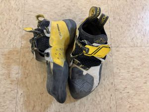
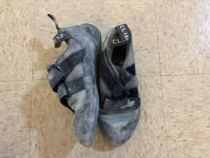
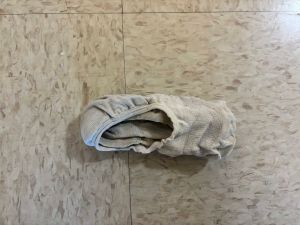
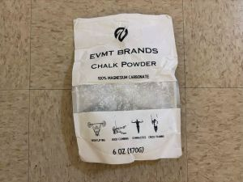
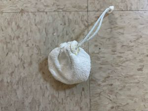
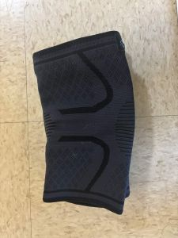
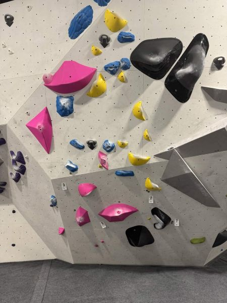

From Chalk to Sends
Take a quick look into my climbing routine, including what I bring with me and what I've been able to accomplish on the wall! It's split into two sections: Chalk Bag Essentials and Recent Routes.
First, I'll focus on some of the small things that make a big difference during a session. Shoes, chalk, and other basics might not seem that important at first, but they can have a big impact on how comfortable and consistent you feel while climbing. This part of the page is meant to give a realistic look at what climbers actually carry, especially for beginners who might not know what they need yet. By no means are these requirements for everyone, but these are definitely what helps me make it through my climbing sessions.
Next is all about progress. These are all about the climbs I'm doing throughout a session, whether that's a flash or a project I spend multiple weeks on. They'll all have different challenges, whether it's balance, strength, or just figuring out a tricky sequence. It's not just about showing off sends, but more about tracking improvement and seeing how far I've come!
Now, let's stop the yapping and get into it!
Chalk Bag Essentials

My go-to pair for the rocks.
F1. La Sportiva Climbing Shoes

My softer pair for easier climbs.
F2. Climb X Shoes

To protect my Achilles
F3. Ankle Socks

My basically empty bag of chalk.
F4. EVMT Chalk

Goes inside of the chalk bag.
F5. Chalk Ball

A second bag of chalk in case I run out.
F6. Metolius Chalk

To warm up the fingers.
F7. Grip Strengthener

To protect my breaking knees.
F8. Knee Brace

To patch and scratches or cuts.
F9. Mini First Aid Kit
Recent Routes
F10. Pink V2

Big squares are easy to grab.
F11. Yellow V3

Directional climbs are hard to do.
F12. Yellow V3

I don't like pinchers
| Route | Difficulty | Enjoyment |
|---|---|---|
| Pink V2 | 1/5 | 3.5/5 |
| Yellow V3 | 3/5 | 4/5 |
| Yellow V3 | 4/5 | 2/5 |